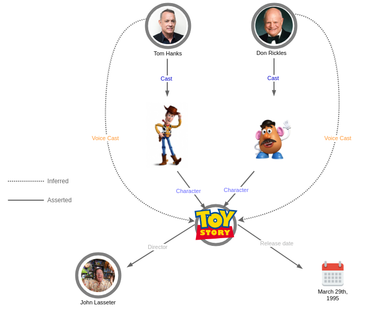

Thinking in graph
What is a Knowledge Graph ?
In this section, we will explain what a Knowledge Graph and some of the advantages of using them.
It is a graph structure
A knowledge graph uses a graph data structure to represent information, it uses the concept of nodes and edges to represent respectively entities and their relations. An entity could be a person, a company, a product. Each entity can have properties that describes it, for example, a person could have a first name, last name, address, birth date and age. These properties are also refered to as the entity’s metadata.
Relations between entities are first class citizen, consequently, it becomes easy to traverse and discover related entities. Examples of relations could be a person is friend with an other person (John –friend–> Ann) or a person works for a company (Eric –works for–> EPFL).
Furthermore, a graph data structure makes it easy to merge new data in existing graph.

It is semantic
The metadata definition is encoded, alongside the metadata, in an ontology. This is a formal description that both humans and computers can understand and process. The metadata is said to be self descriptive.
In the example below, you can see that the entity Toy Story is an Animated movie (also known as the type of the entity) and it has a property Release date for this the value is March 29th, 1995.

It is smart
Since all this information is represented in an ontology, it enables us to run a tool called an inference engine on the data and derive new information from explicitly asserted data. This inference can make information easier to discover.
In the example below, we have Toy Story, it has characters (using the relation called Character) and we have asserted the cast of characters. Having define this, we can now define a rule that instructs the inference engine to create new relations Voice Cast whenever we find the Cast of a Character. This enables us to query the graph and directly get Toy Story’s voices cast without having to navigate through its cast first.

It is alive
A graph is a flexible data structure, and an ontology can evolve as new data comes in. As a result, Data can be continually be added to help serve new usecases.
The illustration below shows how the initial graph representing Toy Story can be augmented to capture many other related domains such as:
- Toy Story’s similar movies (e.g. Cars)
- Cities and associations related to motion picture production (e.g. Motion Picture Association of America)
- Places and people connected to animation movies (e.g. Steve Jobs)